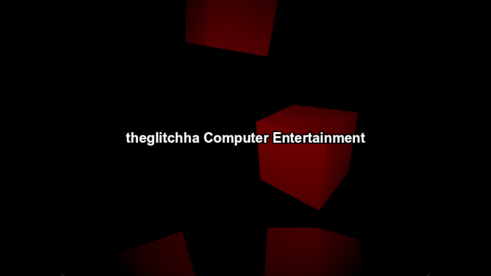

I have worked on a lot of projects in the past, many of which have not turned out.
I see this as a very good thing. Why? Because rather than working on a ton of projects at once, I effectively narrowed down which ones did not motivate me as much, or which ones simply weren't interesting enough.
The projects that didn't work out were good learning experiences, however,
and I wouldn't be where I am without them.
You can think of game dev
like a staircase, but the stairs progressively get taller proportional to
the stair below it. An example of this idea would be if the stair below
you is 1/2 feet tall, then the stair you are standing on is 3/4 feet tall,
and the stair above you is 1 foot tall. Something like where you'd have to
lift your leg up even higher than it took to step up the previous stair.
The idea is that it takes a whole lot of practice. The stair below you helps prepare you for the stairs ahead.
I do rememeber my first idea for a game. It was about a spacecraft prison that crashlanded, and you play as one of the surviving prisoners, trying to rebuild the ship and gather resources. There were many attempts at this game idea. I had even made an entire soundtrack for it (it wasn't very good.)
I could talk about game dev all day. But that's not the point.
You came to see cool game. I do have game to show you, but it's up to you to decide if game is cool or not.
So, there are 2 games to see. As mentioned earlier, these are the projects that lasted the longest, and have been the most fun and challenging to work on.
FPS Tool
I know what you must be thinking. What is a tool? That's not a game.
Well, actually, the idea of FPS Tool is that it is a framework. It is a multiplayer first person shooter system. I plan on turning it into a game when it is finished, of course under a different name though. I started this not too long ago, and I'm having a blast working on it.

The kicker is that it is quite bland in its current state. There are a lot of systems in place for different things, such as loadouts, guns, gun attachments, game modes, parkour, etc. There were just multiplayer-related issues that took priority, so I haven't got to implement game modes yet. Therefore, there is nothing to do while testing the game except test game mechanics, which gets boring fast.
I have a devlog for this game on my youtube. It's not a serious devlog, it's supposed to be silly, and it just shows off progress for the game.
You can view more information about this game here.
Turbonova
Turbonova is a 90s-like console that does not exist. Users can create their own "discs" and play other people's.
The beta release will just include preset games to play. I had started on the editor for users, but I realized that it'd be way too much to include in the beta.
I made a system so that games could be made outside of the editor, so that it'd be easier to develop official games for it.